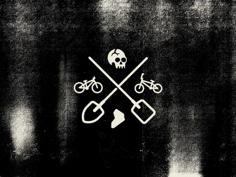

Egy rovid Bemutatkozas
Valentin a nevem.Jelenleg 27 eves vagyok,tavaly koltoztem haza
magyarorszagra elotte 9 evig nemetorszagban laktam.(Ezert nem is erossegem
a magyar nyelv)
Munka tapasztalat
Rengeteg pozicioban kiprobaltam magam,a sima gyari munkatol kezdve a
muszakvezetoig.Rengeteg munkahelyem is volt.Aztan meguntam es itthon
jelenleg jatek tesztelokent dolgozom mellekallasban illetve a jatekosokkal
kommunikalok.Azota erdekel a programozas vilaga,ezert is dontottem el,hogy
jobban beleasom magam es jelentkezem ebbe a tanfolyamba.
Az egyik kedvenc idezetemet megmutatom.
Akármekkora a hegyed, mászd mosolyogva, örülj annak, hogy élhetsz, és ne
félig üresnek, hanem félig telinek lásd a pohárban a vizet.